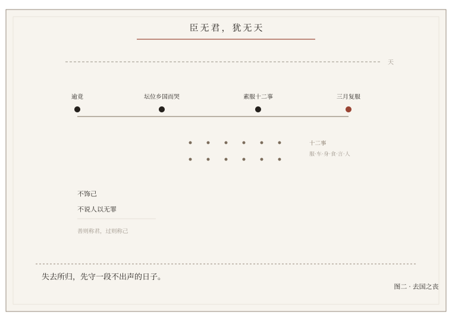

曲礼下 · 二·二十六 · 第 149 课
已出国境，设坛位向本国而哭。素衣、素裳、素冠，去衣缘，着无絇之屦，素幂，乘不剪毛之马，不剪爪不剃须，不祭食，不向人说己无罪，不接见妇人，三月而后复常。注「言以丧礼自处也。臣无君，犹无天也」。
说什么事：大夫士去国逾竟，为坛位乡国而哭；素衣素裳素冠，彻缘、鞮屦、素幂，乘髦马，不蚤鬋，不祭食，不说人以无罪，妇人不当御，三月而复服。
落在哪一层：礼，兼及礼意。十二事一节，是「去国」的完整仪节。
为何编在此位：上节说器不逾竟，此节说人逾竟之后如何自处。上节论物，此节论身。
【经】大夫士去國逾竟，為壇位鄉國而哭。素衣、素裳、素冠，徹緣、鞮屨、素冪，乘髦馬，不蚤鬋，不祭食，不說人以無罪，婦人不當御，三月而復服。
【注】言以喪禮自處也。臣無君，猶無天也。壇位，除地為位也。徹猶去也。鞮屨，無絇之菲也。冪，覆笭也。髦馬，不鬄落也。蚤讀為爪。鬋，鬋鬢也。不自說於人以無罪，嫌惡其君也。御，接見也。三月一時，天氣變，可以遂去也。冪或為幕。
【疏】「大夫士去国逾竟」者，此既去已逾国竟也。「为坛位乡国而哭」者，为坛位，除地为位，乡本国而哭也。「素衣、素裳、素冠」者，还著素服。「彻缘」者，缘，衣饰也。彻犹去也，去其衣服之缘饰也。「鞮屦」者，无絇之菲也。「素幂」者，幂，覆笭也。……「乘髦马」者，吉则翦剔马毛为饰，凶则无饰，不翦而乘之也。「不蚤鬋」者，蚤，治手足爪也；鬋，剔治须发也。「不说人以无罪」者，善则称君，过则称己。今虽放逐，犹不得向人自说道己无罪而君恶，故见放退也。「妇人不当御」者，御，接见也。「三月而复服」者，自贬三月，然后事事反还如吉礼，而遂去也。所以三月者，为一时天气一变，故三月人情亦宜易也。
坛位 注「除地为位」。平地为坛，不立坛庙，只是就地一位。
乡国 乡，向也。向本国所在而哭。
彻缘 注「彻犹去也」，缘为衣之饰边。去其缘饰，服遂无饰。
鞮屦 注「无絇之菲」。屦无絇（鞋头上的装饰），与常屦异。
素幂 幂，覆笭。覆车笭之物，素色无饰。
髦马 注「不鬄落也」。不剪马鬣，与吉时剪饰相对。
蚤鬋 注「蚤读为爪」「鬋，鬋鬓也」。不剪指甲、不剃须发。
御 注「接见也」，非夫妇之御。
三月 注「一时，天气变」。三月为一时。
大夫、士离开本国越过国境，平地设位，向本国而哭。穿素衣、素裳，戴素冠，去掉衣缘之饰，着无絇之屦，用素色的车笭，乘不剪鬣之马，不剪爪、不剃须，不祭食，不向人说己无罪，不接见妇人，三月之后恢复常服。
此节把「去国」办成了一场丧礼。臣无君，犹无天——失去君，等于失去头上的天。故不庆、不饰、不修饰自己，三月然后复常。十二事罗列，看似繁碎，其实只为一句话：这段时间，不算过日子，算守丧。
第一层 哭有定位 不哭于路旁，不哭于他国之庭，平地设位，向本国。哭泣要有方向，方向即所属。
第二层 素的三重 衣素、裳素、冠素；又彻缘、素幂。素是去饰，去饰是自贬。丧礼以素为本，此节全用素。
第三层 身亦在服中 不蚤鬋，是不修饰自己；乘髦马，是不修饰所乘。人与马同在不饰之列，礼的整齐，常在这样的小处显出来。
第四层 不说人以无罪 疏说得最好：「善则称君，过则称己。」已被放逐，仍不向人表白自己无罪，因为一表白，就把过推给了君。此一条是十二事中最难的一条，也是全节的骨。
与今日何干 离开一个自己曾归属的地方，该有一段不出声的日子。不辩解、不粉饰、不急着证明自己清白——先让自己静三个月。
| 左 | 右 |
|---|---|
| 为坛位乡国而哭 | 平地设位，哭有方向 |
| 素衣素裳素冠 | 去饰自贬 |
| 彻缘、鞮屦、素幂 | 车与服皆去饰 |
| 乘髦马、不蚤鬋 | 人与马同在不饰 |
| 不祭食 | 废每食先祭之小节 |
| 不说人以无罪 | 善则称君，过则称己 |
| 妇人不当御 | 御，接见也 |
| 三月而复服 | 一时天气变，人情亦宜易 |
画一片空旷地平线，中央一块低平的方形土台（只一道浅轮廓，不画台柱），台上无人；台左侧一束素色的衣与冠叠放，冠在衣上；台右侧一匹马低头站立，鬣毛蓬乱不剪；马旁一只鞋，鞋头无饰。四组之间留白，下方一条长横线为地。不写文字。赭色只用在土台的上缘线。
